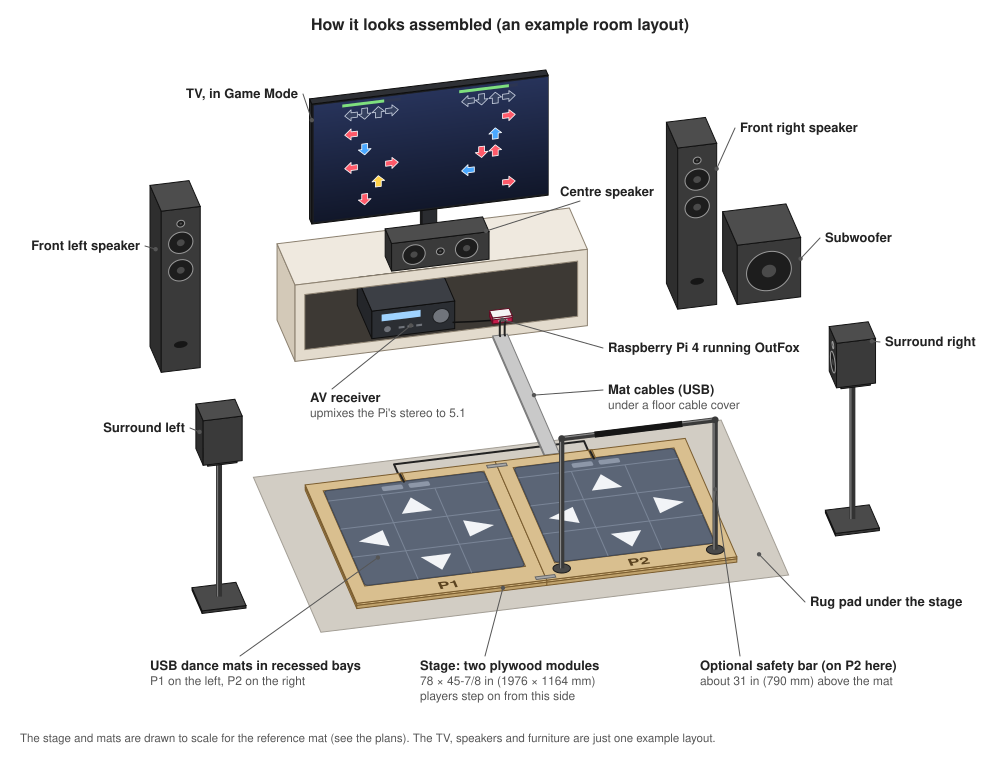
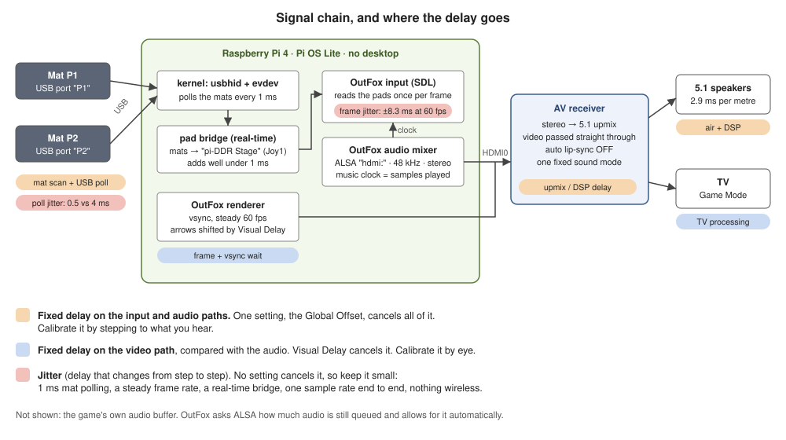

DIY two-player dance game
Arcade-style dancing at home, run by a Raspberry Pi
pi-DDR is a set of plans and Pi software for a home dance game: two inexpensive USB dance mats on a plywood stage that holds them flat, a Raspberry Pi 4 running Project OutFox, your TV and a 5.1 surround receiver. Everything is tuned so your steps, the music and the arrows line up.


What's in it
Game
A Raspberry Pi 4 running Project OutFox, a free rhythm game built on StepMania. The Pi boots straight into it, with no desktop in the way.
Mats
Two USB dance mats, one per player. A small service on the Pi keeps P1 on the left and P2 on the right, even after a reboot or a replug.
Stage
Two plywood modules, 78 × 45-7/8 in (1976 × 1164 mm) together and 1-3/8 in (35 mm) high. Each mat sits in a recessed bay on grippy underlay, so it can't slide or wrinkle.
Sound
The Pi sends plain stereo over HDMI. Your receiver upmixes it to 5.1 and passes the picture on to the TV.
What it costs
Rough 2026 US prices. The TV and the 5.1 receiver are assumed to exist already.
| Part | Estimate |
|---|---|
| Game computer: Pi 4, power supply, card, case, cables | $145–190 |
| Two dance mats | $50–80 |
| Stage: plywood, glue, screws, rug pads, paint | about $210 |
| Core total | about $405–480 |
| Safety bars, optional | about $160 |
| Optical audio adapter, only if the receiver has no HDMI input | about $20 |
A Pi 4 you already own brings the game computer down to about $90. Every item, with notes on what to buy: bill of materials.
How it keeps time
A rhythm game is only fun when a step on the beat counts as on the beat. The setup keeps every delay fixed, so one calibration cancels it, and keeps the part that changes from step to step small.
- 1 ms mat polling. Cheap mats are usually read every 8 ms, which blurs each step's timing by up to ±4 ms. The Pi reads them every 1 ms instead (±0.5 ms), as long as the mat reports as a joystick. For scale, the best judgment in StepMania's classic timing is ±22.5 ms.
- A steady frame rate. OutFox reads the mats once per frame, so at 60 fps a step waits up to 16.7 ms to be counted. Calibration cancels the average; what's left is ±8.3 ms, as long as no frames are dropped. So the Pi boots straight into the game, runs at full clock and stays cool.
- Nothing between the game and the HDMI port. No desktop and no sound server: OutFox writes straight to the Pi's HDMI audio at 48 kHz.
- Two numbers to calibrate. The Global Offset cancels the receiver's upmix delay and the mats' own delay. The Visual Delay lines the arrows up with the TV's picture processing.


Where it stands
The plans and the Pi software are written, but nobody has built this or run it on a real Pi yet. These are the first things to confirm:
- OutFox's audio settings and sync calibration behave as described on the Pi.
- OutFox sees one joystick, "pi-DDR Stage", with P1 on buttons 1–11 and P2 on 12–22. The design follows OutFox's own Pi program, but nobody has played on it yet.
- The Pi hides the raw mats from the game, so the stage is its only joystick.
- OutFox holds a steady 60 fps on a Pi 4 at 1080p.
- Your mats report as a joystick and register left+right jumps.
If you build it, results are welcome as issues or pull requests on GitHub.
Guides
The full technical docs live in the repository: bill of materials, platform plans and latency and sync.